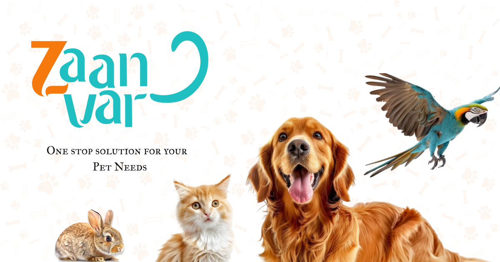

01 · Company project · Mr Chams
Zaanvar — Consumer Pet Platform
Production web and API platform for pet adoption, sales, lost and found, breeds, clinics, grooming, and events.
5,000+ accounts35% faster queries120 ms lower API latency

Problem
Adoption, sales, lost and found, and pet services needed one account system, one set of APIs, and reliable payments.
What I built
- Built REST APIs and customer pages for adoption, pet sales, lost and found, breeds, and service discovery for 5,000+ accounts.
- Developed pet profile, diary, search, and account models across MongoDB and MySQL. Redis caching cut query processing time by 35% and API latency by 120 ms.
- Implemented Razorpay checkout, Cognito and JWT sessions, and Socket.io updates for messaging and live pet location.
- Stored pet media in Amazon S3 and purged cached files through the Bunny CDN API, with XML sitemaps, canonical URLs, and Schema.org structured data.
- Deployed the Node.js services with Docker, PM2, and GitHub Actions, and used Swagger docs for Postman checks. Public and auth routes use Helmet, rate limiting, and bcrypt.
- Connected OpenAI content tools and Firebase Cloud Messaging for pet profiles and customer activity.